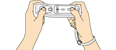

| La télécommande Wii doit se tenir horizontalement. La configuration de base est montrée ci-dessous. Vous pouvez reconfigurer les boutons dans le menu d'options. |
 |
 |
|
 |
| Manette + |
Tourner à droite/gauche |
| Bouton 1 |
Accélérer |
| Bouton 2 |
Marche arrière/Freiner |
| Bouton A |
Utiliser gadget |
| Bouton + |
Mettre le jeu en pause |
|
 |
|
 |
Quand vous conduisez, appuyez brièvement sur le bouton 2 pour freiner. Laissez le appuyé plus longtemps pour commencer à conduire en marche arrière. Si vous voulez continuer à freiner, appuyez sur les boutons 1 et 2 simultanément.
|
|